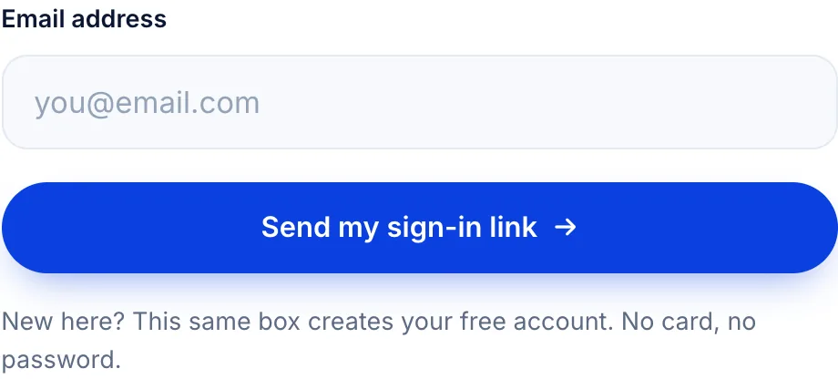
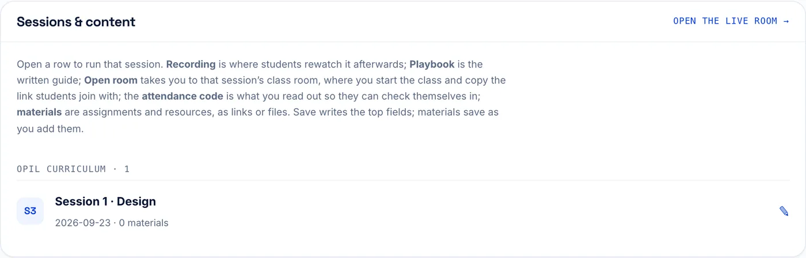
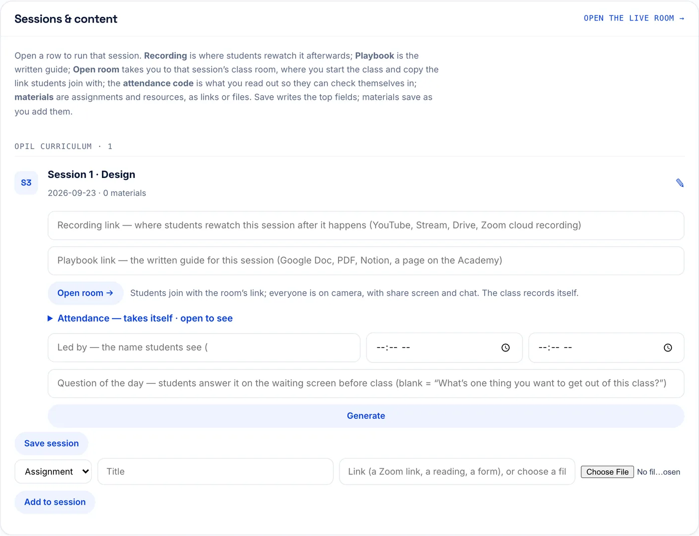
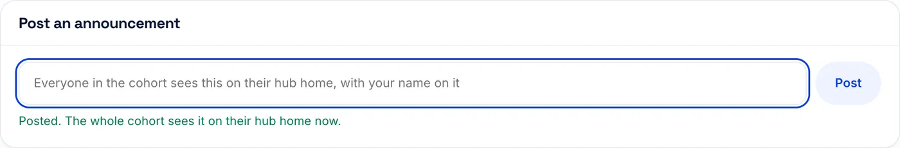
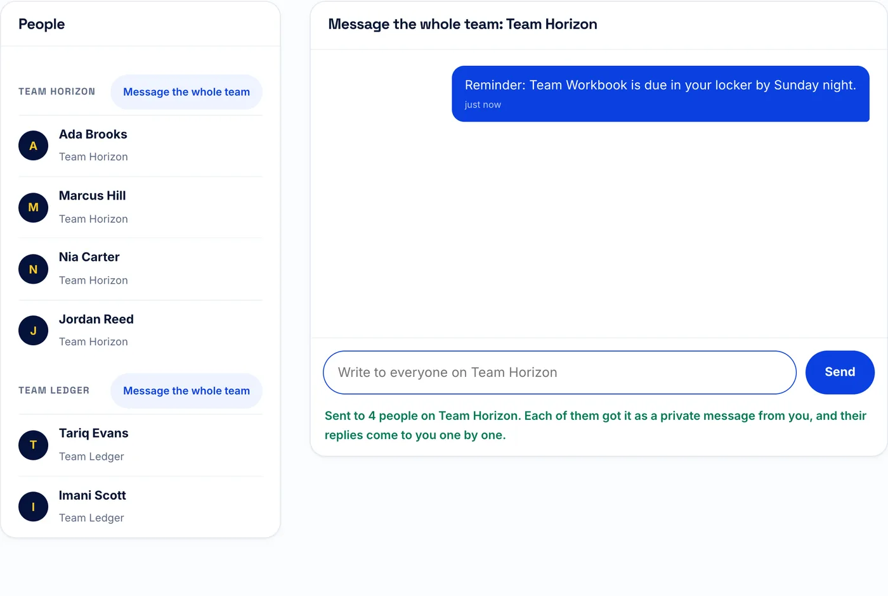
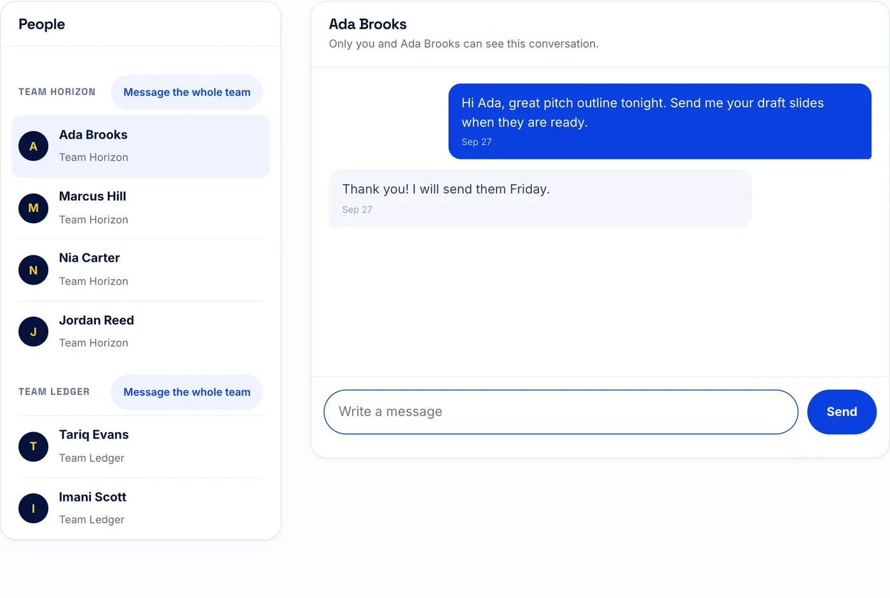

Facilitator guide
How to run your sessions in the OPIL Lab Hub. Keep this page open in a second tab while you work. The pictures use sample names, and you can tap or click any picture to see it full size.
- Sign in
- Find your way around
- Prepare a session
- Post an announcement
- Message students and teams
- Run your live class
- Split rooms by team
- Questions, polls and files
- End the class
- After class
1Sign in
- Go to taylormadeacademy.com/login.
- Type the email the program team added you with, then tap Send my sign-in link →.
- Open the email from Taylormade Academy. Type the 6-digit code on the sign-in page and tap Verify and sign in. Or tap the link in the email.
- You land on My sessions, your home base. You stay signed in on that device.

Tip: The class room page has an email box that lets students in without a code. That box doesn't work for facilitators, on purpose. On the class room page, use the sign in with a code link instead.
2Find your way around
Across the top of every hub page: Home, My team, Messages and Showcase. On the right: My sessions, your home base. Show me around gives you a quick tour of any page.
3Prepare a session
On My sessions, the Sessions & content card lists the sessions you lead.

- Tap a session row (the pencil ✎) to open it.
- Fill in what students need:
- Recording link: where students rewatch the session afterward.
- Playbook link: the written guide for the session.
- Led by: the name students see, plus the start and end times.
- Question of the day: students answer it on the waiting screen before class. Generate suggests one.
- Tap Save session.
- To give students an assignment or a resource: choose Assignment or Resource, type a Title, then paste a link or choose a file (up to 25 MB). Tap Add to session. It saves right away.

4Post an announcement
- On My sessions, scroll to the bottom: Post an announcement.
- Type your message and tap Post.
- You'll see “Posted. The whole cohort sees it on their hub home now.” Every student sees it on their Home page, with your name on it.

5Message students and teams
Open Messages at the top of any hub page. Under People you'll see the whole cohort, grouped by team.
One student: tap their name, type, and tap Send. Only the two of you can see the conversation.
A whole team:
- Tap Message the whole team next to the team's name.
- Type your message and tap Send.
- Each person on the team gets it as a private message from you. When they answer, each reply comes back to you as its own conversation.


Tip: Team chat, the space each team uses to talk among themselves, stays private to that team. Your messages never appear there.
6Run your live class
- On My sessions, open your session and tap Open room →. You'll see “This room is yours.”
- To send students the room link yourself, tap Copy link.
- Tap Start class — everyone on camera. Allow your camera and microphone when your browser asks.
- On the join screen, check Mic is on and Camera is on, then tap Start Class →.
Until you start, students waiting on the page see “The room opens when your facilitator starts the class.” Their page opens by itself the moment you start.
Along the bottom of the room: Chat & people, Files, Tools and Leave. Tools holds everything else:
- Share my screen and Whiteboard
- Poll
- Small groups: breakout rooms, below
- Turn captions on, Effects, Camera & mic settings
- Save transcript
- End the class for everyone
Tip: The class records itself. You don't need to press record.
7Split rooms by team
- In class, tap Tools, then Small groups.
- Split is already set to by team: each team gets its own room, named after the team. Anyone not on a team shares one room called Open. (Choose evenly only if you want mixed groups.)
- Pick the Minutes (5, 10, 15, 20 or 30).
- Tap Split students into rooms, then tap it again to confirm.
While the rooms are running:
- Join room drops you into one team's room.
- Message room sends one line to a single room. Message all rooms… then Send to all reaches every room.
- +5 min or +10 min adds time. Type minutes and tap Set for an exact time.
- Bring everyone back, tapped twice, ends the rooms and returns everyone to the main class.
8Questions, polls and files
- Questions: anyone in the room can ask to speak. Open Chat & people; the first tab, Questions, shows who's Ready to speak. Tap Bring on stage to let them speak, and Done when they finish.
- Polls: Tools → Poll to create one. Results show in the Polls tab under Chat & people as students vote.
- Files: open Files and tap Add a file. Then Show to class puts it on everyone's screen, and Download lets students save it.
9End the class
- Leave only takes you out. The class keeps running and you can come back in.
- To finish for everyone: Tools → End the class for everyone, then tap again to confirm. It always takes two taps, so a class never ends by accident.
10After class
Publish the replay. Back on My sessions, your session shows “Replay is being prepared…” for a little while. When it says “Replay ready — review it, then publish”:
- Tap Review to watch it.
- Tap Publish to students. Students can watch it from then on. Unpublish takes it back down.
Answer help requests. Students ask for help from the hub, and their requests land in Help requests on My sessions. Tap I’ll take this, then Answer to reply by email, or Start a quick room to talk it through live. Tap Close twice when it's handled.
See team work. Lockers · what teams have uploaded on My sessions shows every file and link teams turn in.
Stuck on something? Email Jamal Ware at jware@aucenter.edu. Back to the top ↑